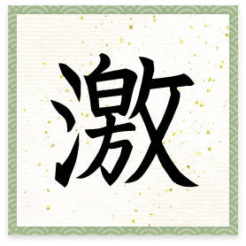

コロナ禍に加え、ロシアによるウクライナ侵攻や大幅な円安、物価上昇、電力不足など、明るい話題が少なかった2022年。
常石グループはどのようにこの難局を乗り越えたのか。
各社社長にこの一年を振り返り、来年に向けた課題について語っていただいた。
合わせて、各社社長が思う、今年一年を表す漢字一文字も紹介する。
ツネイシホールディングス
今年の漢字
2022年の目標と進捗
新Vision（価値観・目指す姿・行動指針・行動規範）の共有と浸透を推進する一環として、「ツネイシみらいプロジェクト」を立ち上げた。
未来につながる“ツネイシらしさ”を確立するコーポレートブランディングに取り組むプロジェクトで、5事業セグメントの代表会社から若手・中堅社員17人が参加し、活動している。
2022年のTOPICS
サステナビリティ推進グループが、多様化する社会課題の解決を図りながら経済的価値を創出することを目指して、グループ各社と協調して目標設定や施策立案を行った。
気候関連財務情報開示タスクフォース（TCFD）にも賛同し、今後は、中長期的な排出量削減目標を設定して開示を行っていく。
気候関連財務情報開示タスクフォース（TCFD）のロゴ
2023年に向けて
社会や顧客から必要とされる会社を目指す。
神原汽船
今年の漢字

世界情勢・物価・為替・海運市況が激動しました
代表取締役社長 神原 宏達
2022年の目標と進捗
神原汽船のビジョン「SHIP」の一つで、環境性能を追求し経済性と環境保全の調和を目指す「Harmonized」に関連して、燃費性能の高い新造船の保有・運航を実現。さらに新燃料対応船も新規発注した。
また、海運市況の高騰を受けて増益となり、2021年～2023年の中期経営方針の財務目標を1年前倒しで達成する見込み。
新規発注した新燃焼対応船
2022年のTOPICS
中堅・若手社員が中心となり、船舶投資、営業戦略、人材開発の3つのプロジェクトを推進。毎月の取締役会で報告や提案を重ね、新たな取り組みを導入した。
2023年に向けて
サステナブルで健全な社会に寄与することを目指すとともに、海運市況の変動に影響されない中長期的に安定した利益を上げる企業体質の構築を進める。
神原ロジスティクス
今年の漢字
グループ内では、サステナビリティ（持続可能性）が強く幅広く意識された一年でした。自社においても事業方針に“持続可能な成長企業を目指す”と掲げており、その実現に向けて引き続き取り組むこと、変化に対応しながら続けることの大切さを常に意識したいと思い、この文字を選びました
代表取締役社長 宮﨑 裕司
2022年の目標と進捗
数字（売上、利益）を見れば100%以上の達成率だが、年初の目標という視点からとらえると評価は下がる。
危険物市場への参入のために建設した危険物倉庫の稼働率は事業計画以上で推移しているものの、鉄道を利用したモーダルシフトによる環境対策への取り組みを具体化できていないことが反省材料となっている。
また、既存事業についても、ワンステップ上の改善ができる可能性があるため、総合的に見ると達成状況としては70％というところだ。
事業計画以上の稼働率で推移している危険物倉庫
2022年のTOPICS
年初に、THIの台風被災に伴う資機材輸送が停止したほか、3月末から2ヵ月にわたって上海のロックダウンの影響で日中間の荷動きが落ち込んだ。そのため上半期は非常に厳しい状況で推移することになった。
下半期は、その落ち込みを補填しようと社員が奮起し、新規貨物の獲得により盛り返したため、通期では予算を大幅に上回る結果となっている。
一つひとつの取り組みを積み重ねることの大切さを実感する一年となった。
2023年に向けて
2023年1月10日に東京事務所を開設。まずは首都圏で、フォワーダー、NVOCC事業者としての知名度、認知度を向上させていく必要がある。
阪神事務所の活動が危険物市場への参入および危険物倉庫建設のきっかけとなったように、東京事務所も、高くアンテナを張ることによって一日も早く具体的な成果を上げることが期待される。
神原タグマリンサービス
今年の漢字
今後の事業展開について、新たな船種への挑戦が始まる年になりました。2025年の水素混焼船タグボートの運航に向けて、監督派遣など新たな分野での関与・検討が始まります。また、5年ぶりに新造船（S-1614番船）が竣工し、新たに定期傭船先も決まりました
代表取締役社長 中村 収
2022年の目標と進捗
2022年の経営スローガンに掲げた「収益の向上」については、国内造船業界全体の不況が予想以上に深刻で、曳船・台船輸送や内航貨物船輸送といった造船関連作業量の減少による売上減が続いた。そのため、曳船定期傭船によって目標数値は改善したものの、大幅な改善には至っていない。
船舶事業部においては、船舶代理店は新造・修繕船の取り扱い隻数減により目標数値に若干届かない状況ではあるものの、営業利益は確保できる見込みだ。
また、船団の安全・安定運航に欠かせない船員確保にも苦戦中。商船学校、水産系学校の新卒者の面接を実施したが、大手企業の進出により優秀な船員確保が困難な状況になりつつある。
2022年のTOPICS
第八天常丸の代替船であるS-1614番船が常石工場にて竣工。2022年10月26日に引渡しを受けた。

第8天常丸の代替船として新造した「S-1614番船」
2023年に向けて
安定収益の確保に向けて、次の課題に取り組む。
- 人的資源の確保（陸上・海上職）
- 曳船・台船事業の拡大および環境に配慮した船隊整備
- フィリピン事業の見直しと船団強化による事業の拡大
- 新たな船種による新規事業の取り込み
コロナ感染症、戦争・分断、環境災害、世界景気、国の未来など、憂うことの多い一年でした
代表取締役社長 神原 宏達